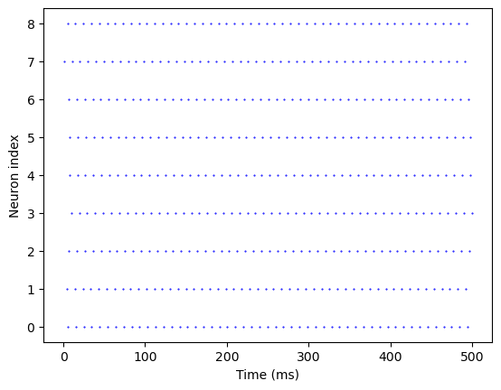
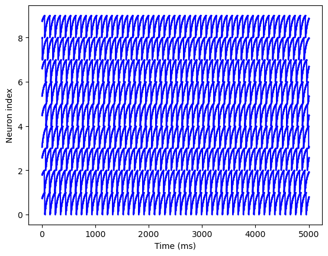
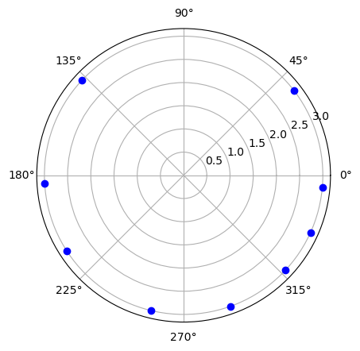

9 connected neurons
9 connected neurons#
from brian2 import *
%matplotlib inline
---------------------------------------------------------------------------
ModuleNotFoundError Traceback (most recent call last)
~\AppData\Local\Temp\ipykernel_30148\3880122280.py in <module>
----> 1 from brian2 import *
2 get_ipython().run_line_magic('matplotlib', 'inline')
ModuleNotFoundError: No module named 'brian2'
# Constants
tau = 4*ms
I = 1.1/ms
gamma = 1/ms
# Non-dimensionalized constants
tp = tau/ms
curr = I*ms
g = gamma*ms
out = curr/g #should be > the threshold of firing
# equation (1)
eqs = '''
dv/dt = I - gamma*v : 1
'''
# equation (2)
eqs2 = '''
dv/dt = ((I/gamma) - v)/tau : 1
'''
start_scope()
inh = 0.001
exc = 0.001
n = 9
seed(21)
G1 = NeuronGroup(n, eqs2, threshold='v>1', reset='v = 0', method='exact')
group1init = randint(0, 99, size=n)/100
G1.v = group1init
# Inhibitory synapses
I1 = Synapses(G1, G1, on_pre='v = out * (1-exp(-(tp * log(1/(1 - g*(v_post - inh)/curr)))/tp))')
I1.connect(condition='i != j')
M1 = StateMonitor(G1, 'v', record=True)
Sp1 = SpikeMonitor(G1)
run(500*ms)
plot(Sp1.t/ms, Sp1.i, '.b', markersize=1)
xlabel('Time (ms)')
ylabel('Neuron index')
show()

for x in range(n):
plot(range(len(M1.v[x])), M1.v[x]+x, color='blue', marker='.', markersize=1);
xlabel('Time (ms)')
ylabel('Neuron index')
show()

plot(Sp1.t/ms, Sp1.i, '.b', markersize=5)
xlabel('Time (ms)')
ylabel('Neuron index')
show()

Sp1.spike_trains()[4]
\[\left[\begin{matrix} 7.4 & 17.2 & 27. & \dots & 477.8 & 487.6 & 497.4\end{matrix}\right]\,\mathrm{m}\mathrm{s}\]
t = 4020
for x in range(n):
polar(M1.v[x][t] * 2*pi, 3, 'bo')
